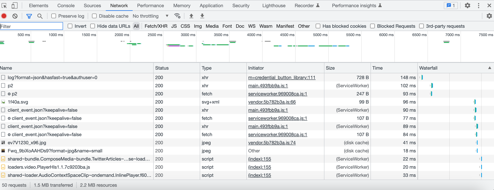
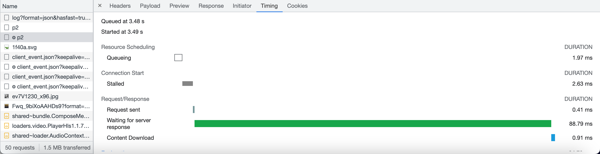

Video of Network Traffic (Twitter)
A visual representation of what happens to the network when a button is pressed.
Screenshot of Network Traffic
How long it takes each function to load

Screenshot of the Server Timing Response
How long it takes for "p2" to load

Observations
- As I clicked a button, many request statuses turned to "200," meaning the server responded with an "OK" and it is successful.
- When I scroll down the page, many new requests come up.
- There is a green and red graph on the top that displays the time it takes for the requests to load (in ms).